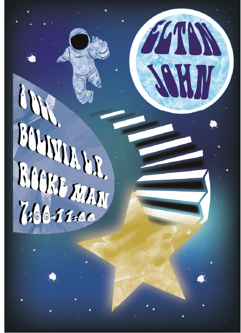
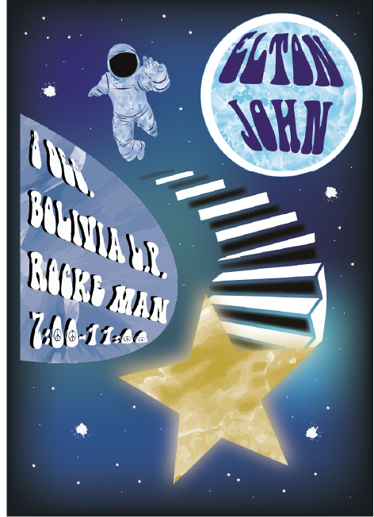

Proyecto personal: Diseñé carteles diferentes para Orgullo y Prejuicio utilizando la técnica del caligrama. Fue uno de mis primeros retos creativos, y le tengo un cariño enorme porque no solo aprendí a diseñar, sino a amar lo que hago.
Abril 2022
Proyecto personal: Carteles inspirados en Cavetown, un artista clave en mis inicios y en mi camino hacia el diseño gráfico.
Mayo 2022
Proyecto personal: Carteles en técnica de caligrama, un reto creativo usando solo una tipografía y tamaño.
Mayo 2022

Carteles ficticios para promocionar un concierto imaginario de Elton John, todo en un mundo creado por mí.
Mayo 2022
 
